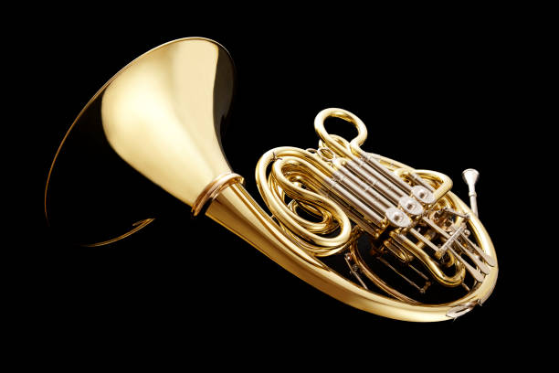
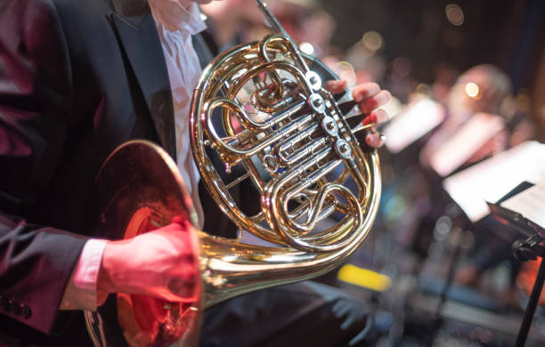

French Horn
French horns are classified as lip-vibrated aerophones. They make sound by vibrating lips and pushing air through a mouthpiece which then travels through the instrument. The length of the instrument determines the pitch of the note. French horn players manipulate this using valves which redirect the airflow through more or less tubing, resulting in lower or higher pitched notes.

Classical Applications
The french horn is very commonly used for playing melodic lines and solos. It has powerful tones that carry far and create rich bodied chords. The range of the instrument allows it to create harmonic filling, bridging the gap between low and high end melody.

Famous Piece
John Williams is a fan of using the french horn. From Star Wars to Harry Potter, he has fully utilized the vast nature of the horn. I want to highlight its use in the opening of the Jurassic Park theme song. The lonesome solo feel uplifting and wondorous leading into the full orchestra.
Fun Fact!
If you were to uncoil a french horn and lay it out straight, it would be around 13 feet long.